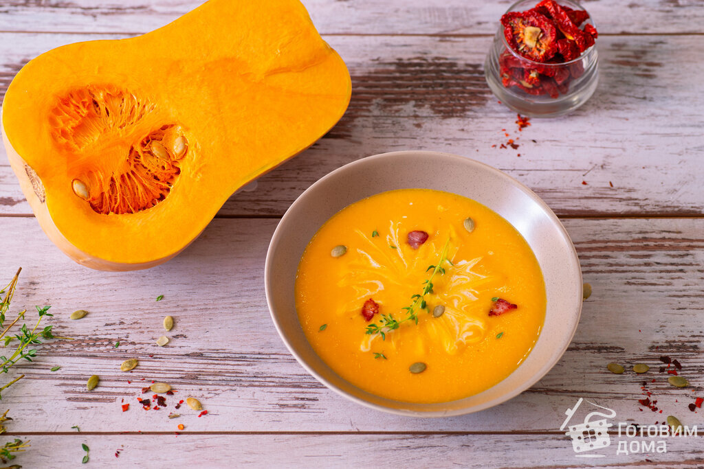
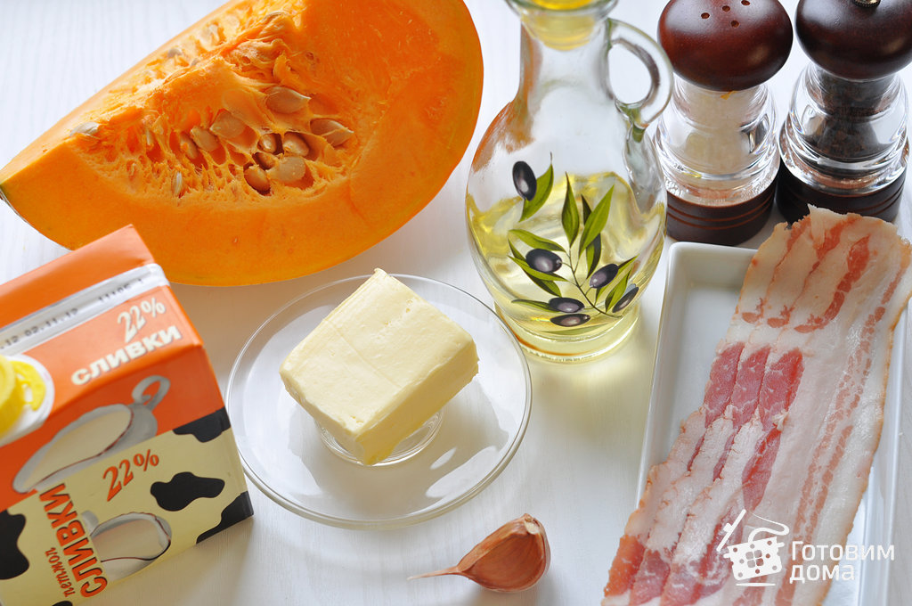

Сливочный крем-суп из тыквы

Ингредиенты
- тыква (мякоть) 1 кг
- вода 1-1,2 л
- репчатый лук 1 шт
- чеснок 1-2 зубчика
- сливочное масло 30-50 г
- сливки (20-30%) 100 мл
- растительное масло 2 ст.л.
- соль, перец по вкусу
Пошаговый рецепт
Подготовить ингредиенты для тыквенного супа:

- Тыкву вымыть, обсушить, разрезать пополам, затем нарезать крупными ломтиками.
Срезать грубую кожицу и удалить внутренности с семенами.
Нарезать мякоть кубиками.
Лук очистить и мелко нарезать.
Чеснок очистить и мелко порубить или пропустить через чесноковыжималку.
В кастрюле (или сотейнике) разогреть сливочное масло с растительным, выложить лук, слегка посолить, поперчить и обжарить на медленном огне, до прозрачности.
- Положить чеснок и обжарить с луком 1 минуту.
- Добавить кубики тыквы, посыпать щепоткой сахара и обжаривать, изредка помешивая, 5-6 минут.
- Влить 1-1,2 литра воды и довести до кипения.
- Варить при слабом кипении около 20 минут, пока тыква не станет мягкой.
- Суп пюрировать блендером.
- Влить сливки, по вкусу приправить солью, перцем, и перемешать.
- При подаче украсить крем-суп тыквенными семечками, крутонами и ломтиками жареного бекона.